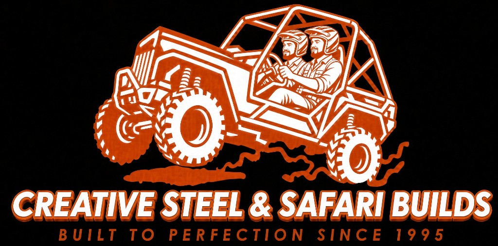
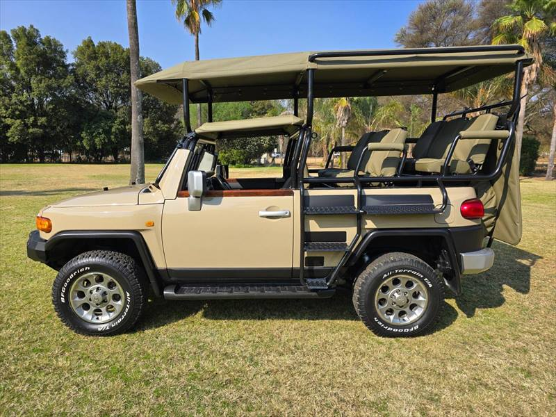
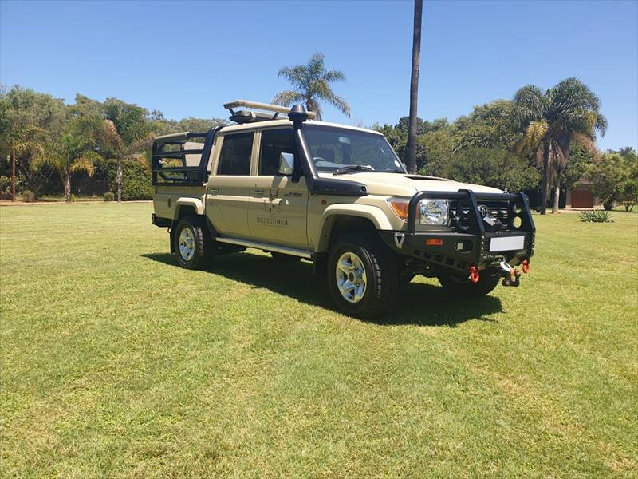
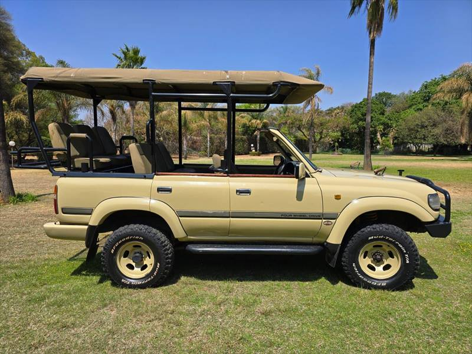
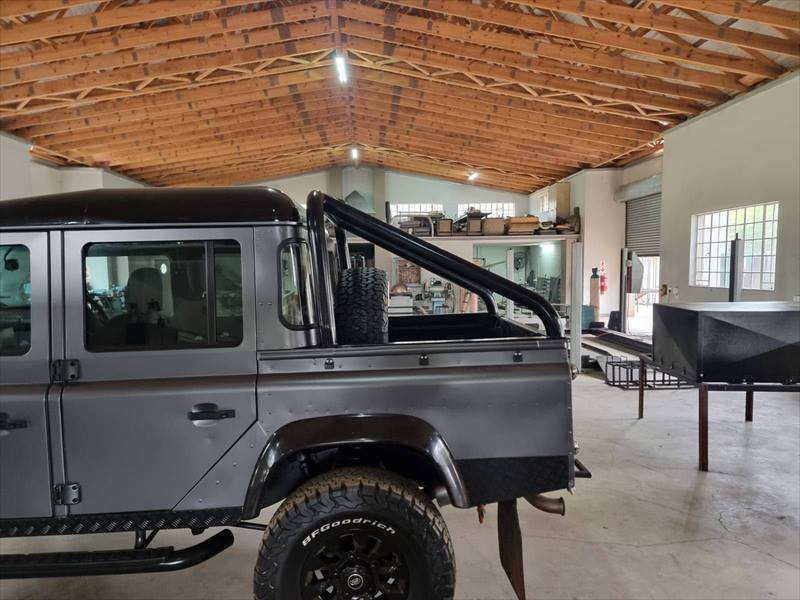

Isuzu D-Max cattle frame
Tubular cattle rails over the load bin, powder-coated black.

Creative Steel and Safari Builds CallSteel fabrication · Pretoria East
Built in our workshop since 1995



Five kinds of steelwork. Open a category to see that work only.

Cattle frames, bush bars, side steps, pipe work, and game viewers. Welded in-house. Bring the vehicle or the drawing.
A few finished pieces. Open one to see that category.
Call or WhatsApp with your vehicle and what you need built.
Rails and load-bin cages for bakkies.
Tubular cattle rails over the load bin, powder-coated black.
Single cab with a full cattle frame, side steps, and snorkel.
Black tubular cattle frame with side steps on a Pro-4X.
Cattle frame with a rooftop platform and snorkel.
Single cab cattle frame with a rooftop tent box.
Elevated seats, canvas, and safety frames.
Black steel frame, khaki canvas roof, tiered seats, and a side ladder.
Double cab with khaki rear seats, snorkel, side steps, and a rear bumper.
Sand-coloured Pik Up with a black game viewer frame and tan benches.
Crew cab with a rear roll bar, tan seats, and a swing-away spare.
Winch bull bar, snorkel, roof rack, game viewer frame, and rear bumper.
Elevated seats above cab height, with side steps.
Tiered seating, rear frame, and a bull bar on an LX V8.
Rear-facing elevated seats with an access ladder.
Open-air game viewer with a canvas roof, tiered seating, bull bar, and side steps.
Canvas canopy, tiered seating, and an access ladder.
Bull bars and winch-ready bumpers.
Winch bull bar on a double cab.
Front bull bar on a safari Defender.
Front bull bar on a game viewer.
Rock sliders and access steps.
Access steps along the single cab.
Side steps on a double cab Defender.
Side steps on a Pro-4X.
Side steps and a rear ladder.
Roll bars, racks, canopies, and one-offs.
Black roll bar with rear seating on a double cab.
Charcoal double cab with a rear roll bar, built in the workshop.
Silver-grey double cab with a black rear roll bar and side steps.
Full roll cage, bush bar, and bed frame on a single cab.
Olive canvas canopy, rear bumper, snorkel, and side steps.
Khaki canvas, tubular frame, bull bar, and side steps.
Front rack, bumper, and rear passenger pads on a quad.